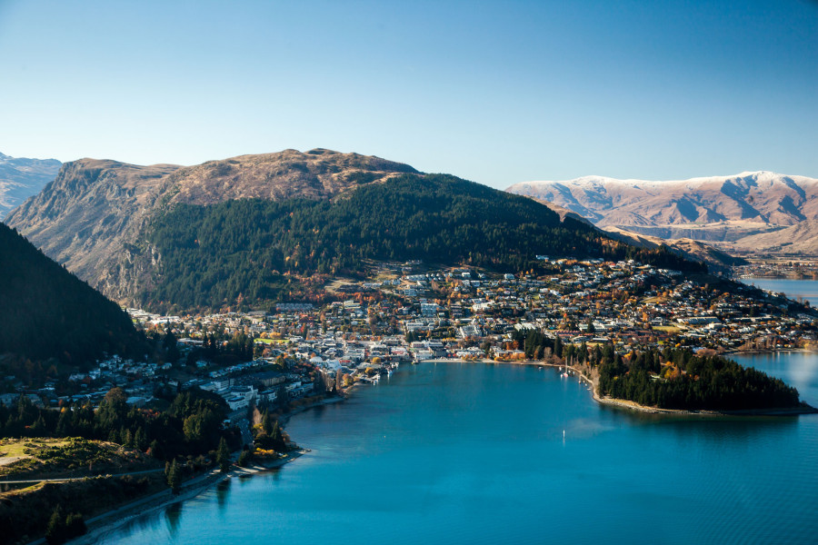
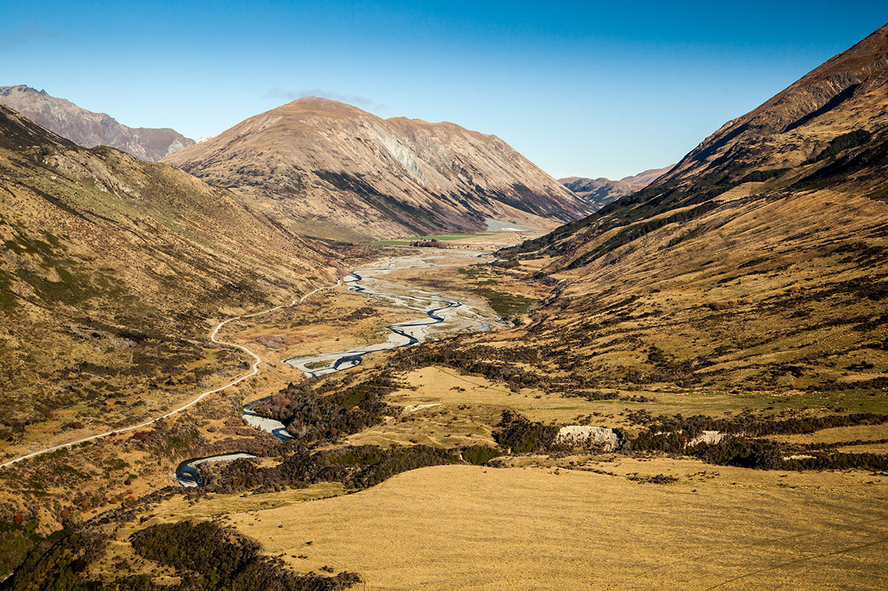

History of Queenstown
Nestled on the banks of Lake Wakatipu, Queenstown (Maori name Tahuna) is one of New Zealand’s most
loved tourist and holiday destinations. The town is settled right at the lake’s edge, surrounded by
scenic mountain ranges.

The Wakatipu Basin was created by glacial movement some 15,000 years ago. Evidence of Maori presence
has been found dating back around 700 years, though the area was apparently not settled by Maori;
rather, they used it as a summer hunting ground for the huge, flightless moa and the treasured pounamu,
or greenstone, which was found there.
The first European visitor was the Scottish-born settler Nathanael Chalmers, in 1853. Reko, a Maori
chief, led Chalmers on what was probably the first high octane tour – an off-road trip crossing mountain
ranges, canoeing rivers and finally speeding through the Cromwell Gorge on a raft made of flax stems.
More than 50 years later, Chalmers recalled the trip: “I shall never forget the “race” through the gorge
… my heart was literally in my mouth, but those two old men seemed to care nothing for the current.”
He paid his ‘guide’ with a three-legged iron pot – and white water rafting remains a popular sport to this day!
A few years after Chalmers’ rafting adventure, William Rees and Nicholas von Tunzelmann settled on the
shores of Wakatipu – Rees on what is now Queenstown, and von Tunzelmann across the lake. The friends
married two sisters, Frances and Gertrude Gilbert. It was 1860, and the settlers had a couple of years of
peaceful farming before the gold rush of 1862 turned the area into a shanty town; within a few months more
than 1,500 miners were literally camped at their doorsteps.
Rees’ land lease was withdrawn and he received a hearty payout to vacate it; however across the lake, von
Tunzelmann ran into financial difficulties and had to abandon his land – leaving the Von River and Mt
Nicholas named as his legacy.

As the gold ran out and the miners left, Chinese miners were brought in to work the Wakatipu Basin.
About 5,000 Chinese workers settled in Otago in the late 1800s. The old Chinese goldmining settlement
at Arrowtown has been restored as an historical attraction.
By the early 1900s, the gold was mostly gone; the miners had ‘followed the colour’ to different fields,
the Chinese had either returned to China or gone to other parts of the country. The population of thousands
dropped to less than 200.
The area continued as farmland, particularly sheep stations, and as a summer holiday destination.
Bushwalking and tramping were on offer, with the Milford, Routeburn and Hollyford Tracks at the doorstep.
With the establishment of Coronet Peak Ski Field in the mid 1900s, Queenstown began its rise as one of New
Zealand’s favourite holiday destinations. Access and accommodation improved; as more people came from overseas,
the tourist industry boomed.